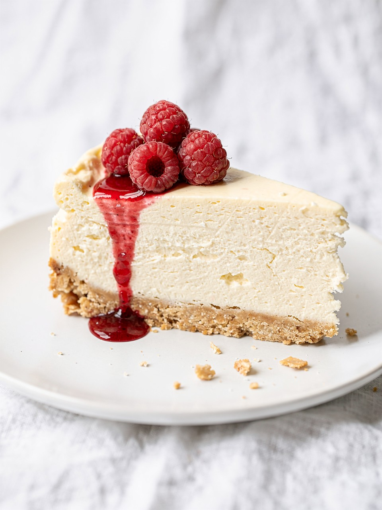

Sour Cream Cheesecake recipe

Description
Don't get stressed about the name of the dish, because by doing this recipe you will enjoy the easiest cheesecake ever.
Ingredients
- 1(9 inch) prepared shortbread pie crust.
- 2(8 ounce) packages cream cheese.
- 1 cup white sugar.
- 2 large eggs.
- 1 cup sour cream.
- 2 teaspoons vanilla extract.
Steps
- Gather all ingredients.
- Preheat the oven to 325 degrees F (165 degrees C). Place pie crust in a pan.
- Cream together cream cheese and sugar.
- Add eggs one at a time, blending well.
- Add sour cream and vanilla.
- Pour into prepared crust in the pan.
- Bake in the preheated oven until the cake is set and jiggles evenly across the top when lightly shaken, 60 to 70 minutes.
- Run a knife around the outside edge but leave the cake in the pan. Let cool on the counter, then place in refrigerator. Remove from pan when completely chilled, and serve.